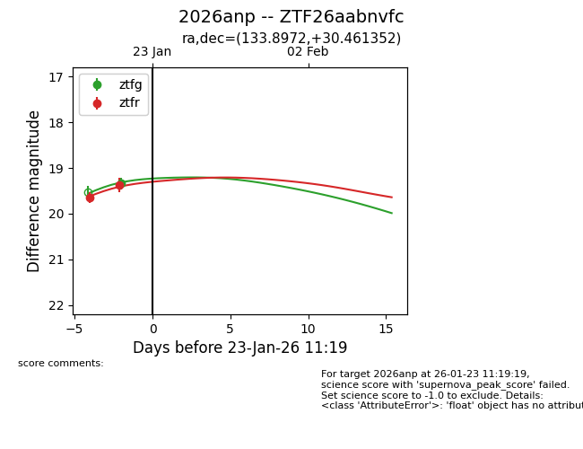
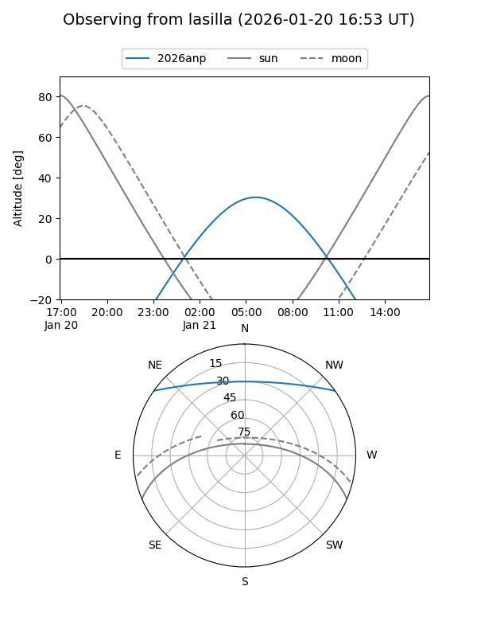
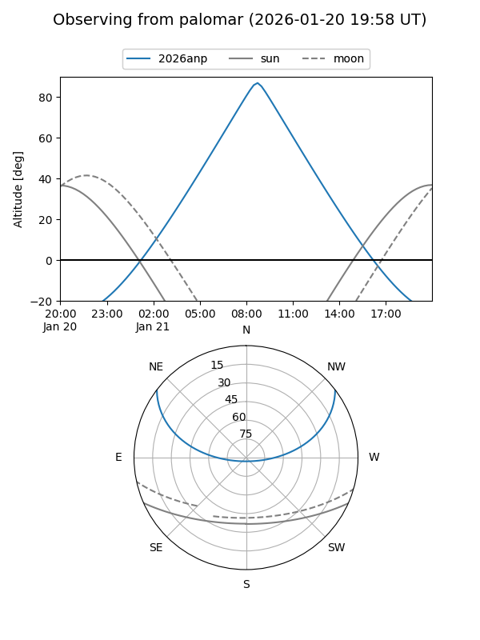
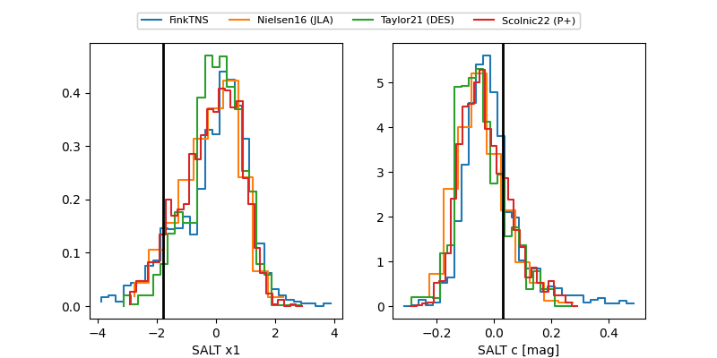

2026anp
Target 2026anp at 2026-01-19 11:16
Aliases and brokers:
FINK: link
Lasair: link
ALeRCE: link
TNS: link
YSE: link
alt names
ZTF26aabnvfc (ztf,fink_ztf)
2026anp (tns,yse)
Coordinates:
equatorial (ra, dec) = 133.8972,+30.46135
equatorial (HMS+DMS) = 08:55:35.33,+30:27:40.87
galactic (l, b) = (194.3335,+38.80748)
Flags:
Photometry:
last ztfr=19.64
1 ztfr detections
Lightcurve

Visibility


Additional plots
